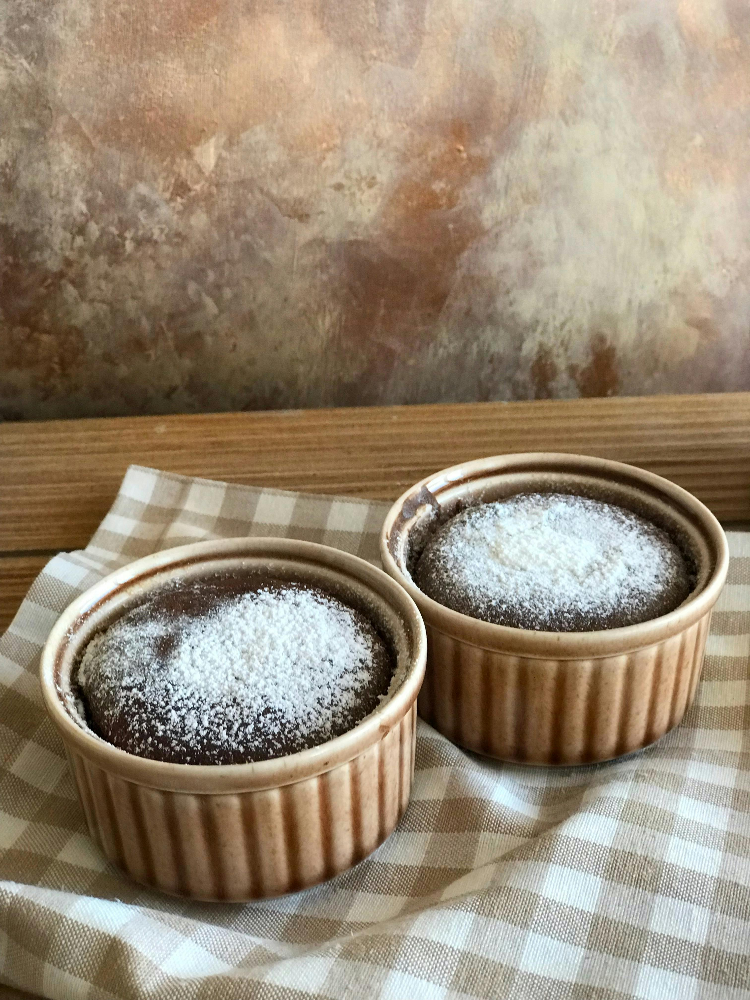

Çikolatalı Sufle Tarifi

İçindekiler:
- 2 Yumurta
- 4 Yemek Kaşığı Toz Şeker
- 80g Bitter Çikolata
- 2 Yemek Kaşığı Tereyağı
- 2 Yemek Kaşığı Un
- 1 Çay Kaşığı Kakao (kalıbı yağlamak için)
Yapılışı:
- Çikolata ve tereyağını benmari usulü eritin ve soğumaya bırakın.
- Yumurta ve şekeri bir kaba koyup köpürene kadar çırpın.
- Soğuyan çikolatalı karışımı yumurtalı karışıma ekleyip karıştırın.
- Unu eleyerek ekleyin ve homojen bir karışım elde edene kadar karıştırın.
- Sufle kaplarını tereyağı ile yağlayın ve içlerine biraz kakao serpin.
- Karışımı kaplara paylaştırın ve önceden ısıtılmış 200°C fırında 7-10 dakika pişirin.
- Fırından çıkardıktan sonra sıcak servis edin.
Geri Dön
 Tatlı Keşif
Tatlı Keşif
sweettooth123 (18 Kasım 2024 11:15):
Çikolatalı sufle gerçekten muazzam! Dışı kıtır, içi akışkan. En sevdiğim tatlı oldu.
cakemaster99 (17 Kasım 2024 14:25):
Tarifi denedim ve tam istediğim gibi oldu! Çikolata tadı harika ve yapımı çok kolay.
suflefanatic (16 Kasım 2024 10:10):
Çok lezzetli bir tarif, kesinlikle tavsiye ederim. İçindeki çikolata akışı mükemmel!
dessertlover44 (15 Kasım 2024 18:50):
İçindeki sıcak çikolata akışı bir harika! Kesinlikle yeniden yapacağım.